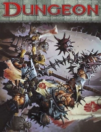

“Dungeon 156” on the
Shelf of Many Books

Dungeon #156
D&D 4
(4e)
Dungeon 156
on DriveThruRPG
Known monsters from the book:
Abyssal Ghoul Pack Leader
Animated Carriage
Archer Statue
Fish-Men of Dagon Slayer
Fish-Men of Dagon Warrior
Grasping Statue
Greater Ghoul
Guardian Statue
Horrid Timber
Leaping Statue
Minotaur Skeleton
Mystic Cultist
Thuggish Cultist
Vicious Dire Wolf
Voice of Dagon
Werewolf Archer
Werewolf Lord
Wrath of Dagon